Tanışmak, paylaşmak ve birlikte vakit geçirmek için Moda'dayız. Dans gecelerinden yogaya, quiz akşamlarından Hyrox antrenmanına kadar Moda'da birlikteyiz.
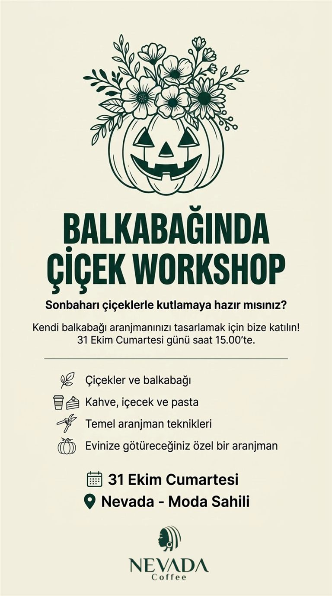
Sonbaharı çiçeklerle kutlamaya hazır mısın? Kendi balkabağı aranjmanını tasarlamak için Moonli Floral Design ile Nevada'da buluşuyoruz.
⚠️ Kontenjan sınırlı! Yerini ayırtmak için Instagram'dan DM at.
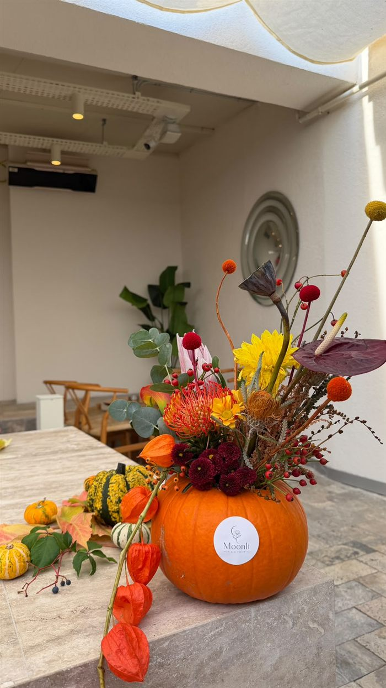
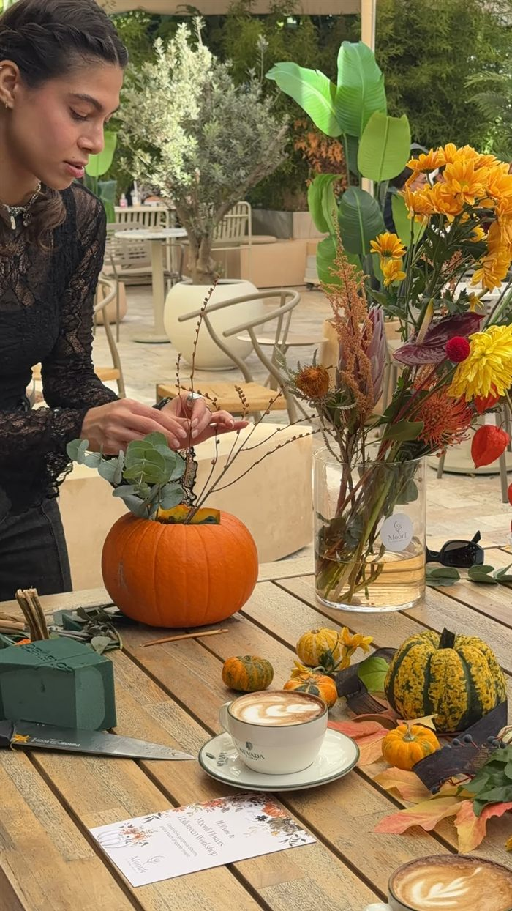
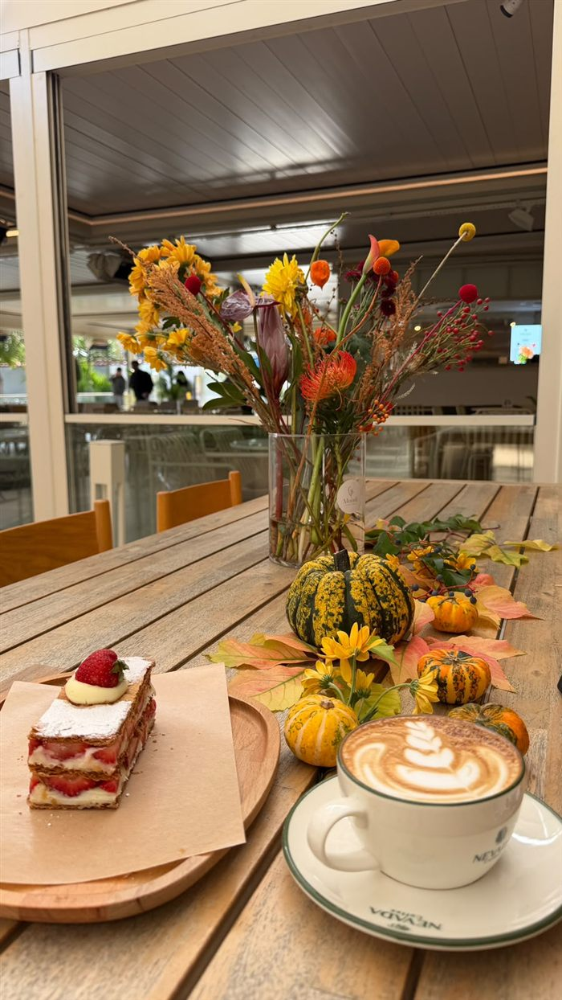
Daha önce hiç denememiş olman bir engel değil, başlamak için bir sebep. Tüm etkinliklerimiz başlangıç seviyesine açık.
Swing dans geceleri, müzik buluşmaları, quiz geceleri ve yeni insanlarla tanışacağın sohbet akşamları.
Nefes, farkındalık ve beden. Kendine iyi gelmek için sakin ve huzurlu buluşmalar.
Sahil boyunca koşular ve enerjini zorlayan Hyrox antrenmanları. Birlikte daha güçlüyüz.
Ellerinle üret, kendi eserini evine götür. Sulu boyadan çiçek aranjmanına, mumdan lipglossa yaratıcı buluşmalar.
Denize karşı yoga, sahilde Hyrox, Nevada'da atölyeler… Okla aylar arasında gez, bir güne dokun, o günün etkinlikleri hemen altta açılsın. Katılmak için Instagram'dan bize yazman yeterli.
Takvim hava koşullarına göre değişebilir. En güncel duyurular için @modaeventclub hesabımızı takip et.
Bazı vedalar içimizde yarım kalır… 🍂 25 Ekim Pazar sabahı Nevada'nın bahçesinde Manifest Art ve Nefesimekan ile buluştuk. Gözlerimizi kapatıp nefesimizi dinledik, sonra hissettiklerimizi renklere döktük. 🎨🌬️
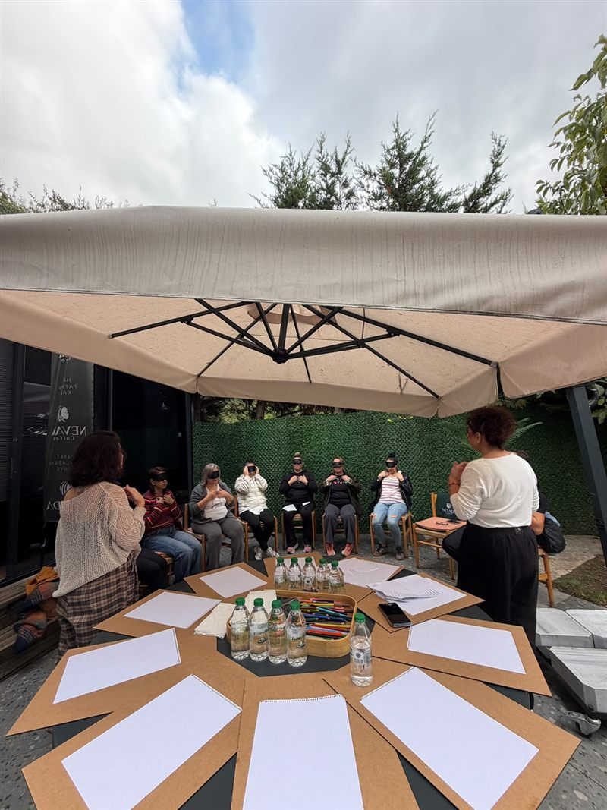
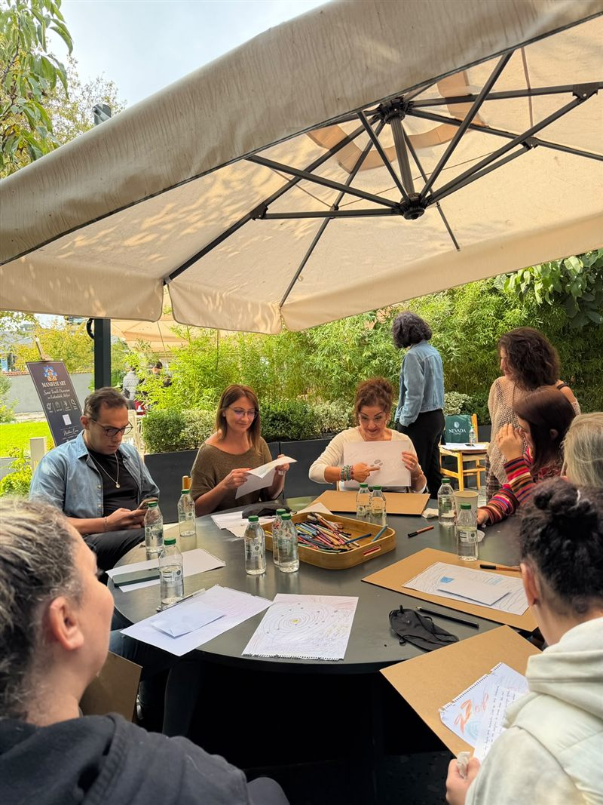
📼 12 Eylül 2026 Cumartesi gecesi · Nevada Coffee Moda
Güneş batarken Moda İskelesi'nde başladı, sokaklara taştı, gece Nevada'nın terasında devam etti. Kimi ilk kez dans etti, kimi yıllardır dans ediyordu. Ama o gece herkes aynı müzikte buluştu. 🎷💃
Swing Planet ve Nevada Coffee Moda ile birlikte düzenlediğimiz o geceden kısa bir film. Bir sonraki dans gecesinde sen de aramızda ol!
Temmuz'dan Ekim'e, Cumartesi sabahlarını Moda'da terleyerek başlattık. Önce Hyrox antrenmanı, sonra iskeleden denize serin bir dalış, en son Nevada'da sıcak bir kahve. ☕🌊
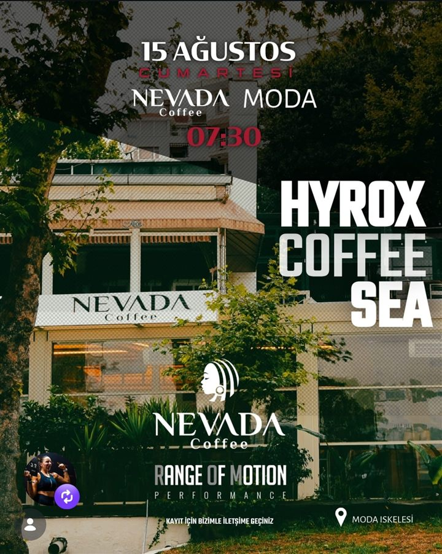
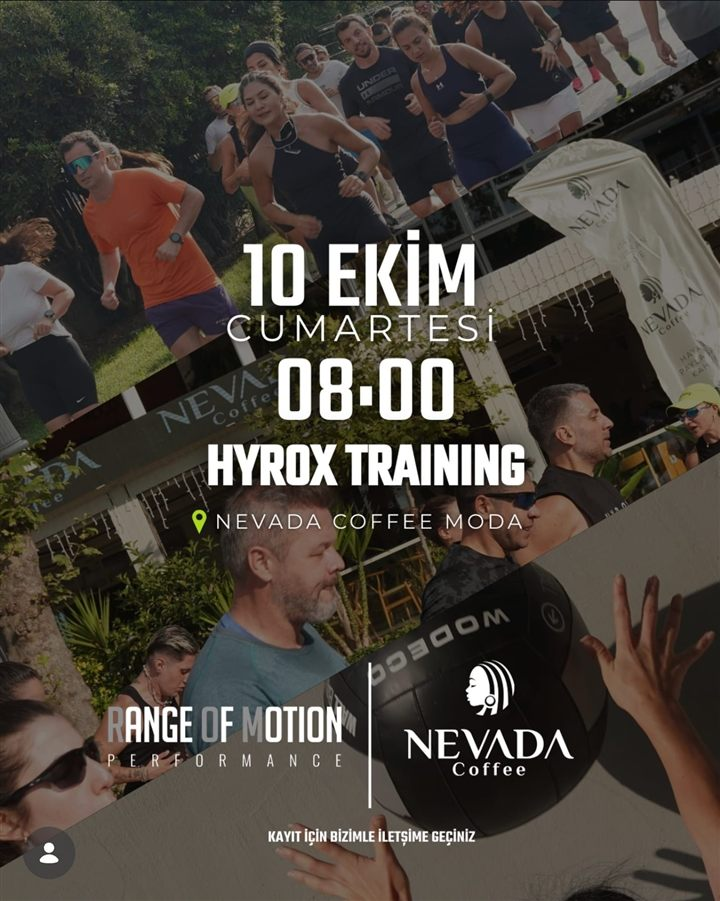
Range of Motion Performance ve Nevada Coffee Moda ile birlikte düzenledik. Yeni tarihler için takvimi takip et! 💪
Ağustos'u dolu dolu geçirdik. Bir akşam Nevada'nın bahçesinde bilgimizi yarıştırdık, 30 Ağustos Zafer Bayramı'nda ise iskele manzarasında yoga yapıp kırmızı tişörtlerle sahil boyunca koştuk. 🇹🇷
Moda Event Club, Moda'da denizi, sokağı ve kafeleri bir buluşma noktasına dönüştüren bir topluluk. Kimi ilk kez dans adımı atıyor, kimi yıllardır koşuyor. Ama hepimiz aynı yerde, aynı müzikte, aynı gülüşte buluşuyoruz.
Etkinliklerimize Moda'daki mekân dostlarımız ev sahipliği yapıyor. Her buluşmanın ardından yeni arkadaşlıklar ve güzel anılar kalıyor.
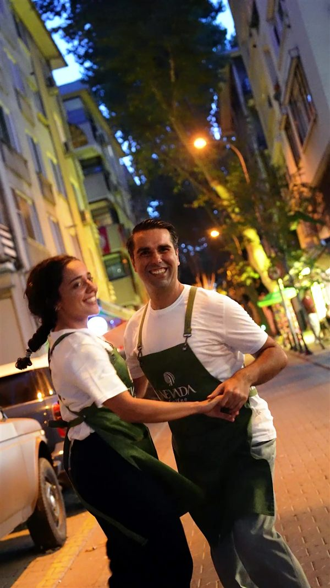
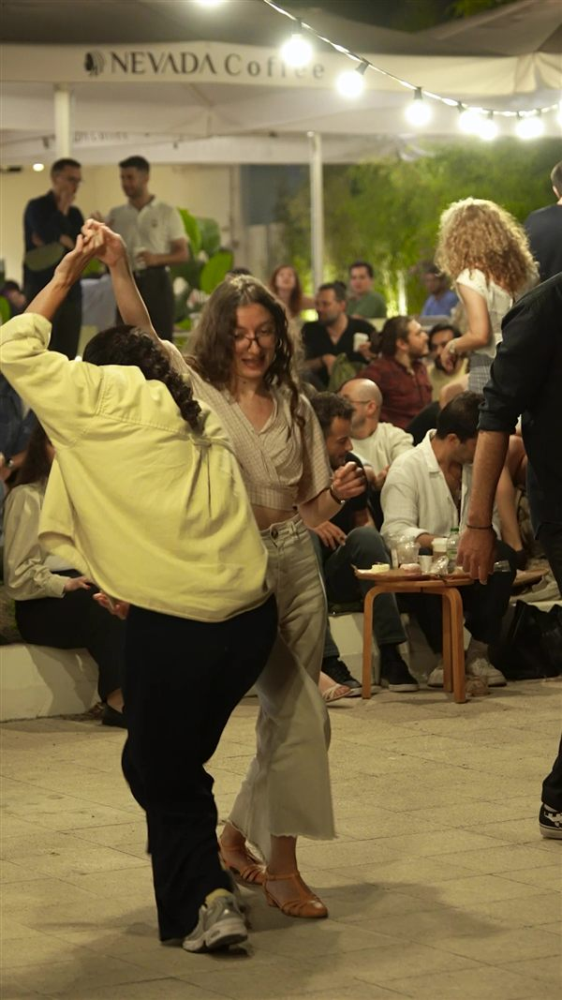
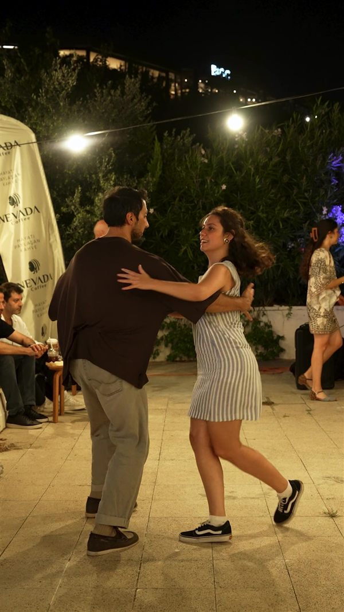
Dans gecelerimizden, atölyelerimizden ve Moda'nın hikâyelerinden son paylaşımlarımız. Videoları burada izleyebilirsin.
Etkinliklerimizin çoğu Moda sahilinde, Moda İskelesi'nin hemen yanındaki ev sahibimiz Nevada Coffee Moda'da.
Caferağa Mah., Moda Cd. No: 171/A
Kadıköy / İstanbul
🚶 Moda İskelesi'nin hemen yanında, deniz kenarında
🧭 Yol tarifi alBazı etkinliklerimiz iskele ve sahilde, açık havada yapılır. Yeri her duyuruda ayrıca belirtiyoruz.
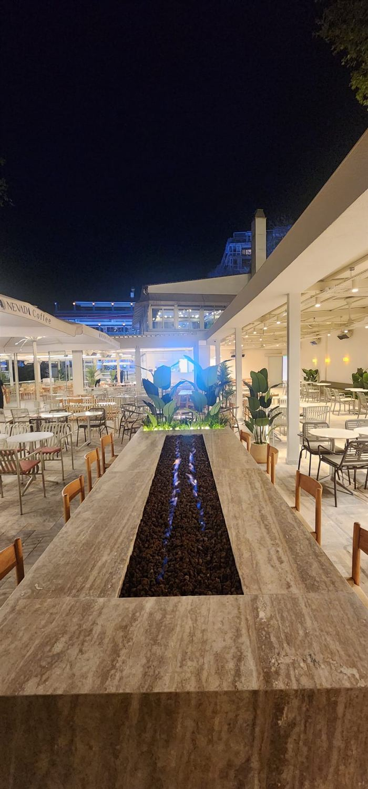
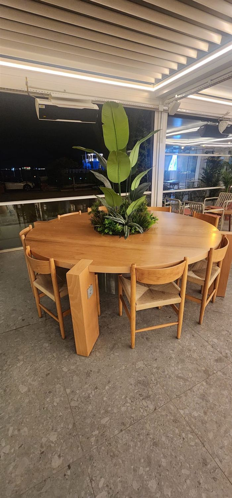
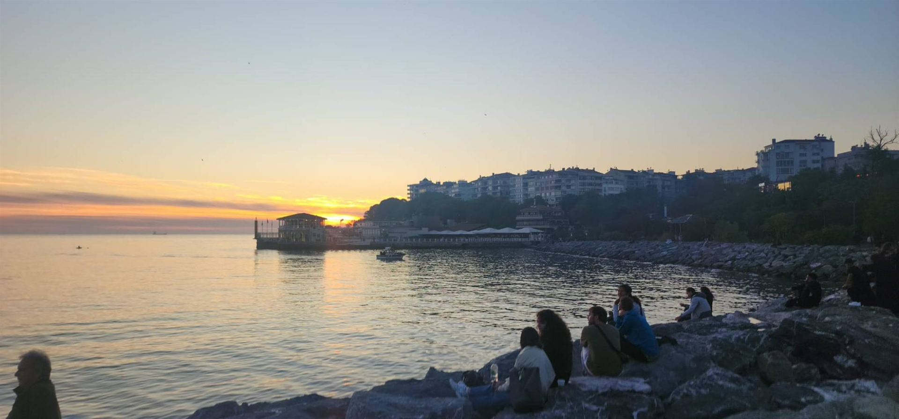
Katılmak çok kolay. Kontenjanlı etkinliklerde yerini ayırtmayı unutma.